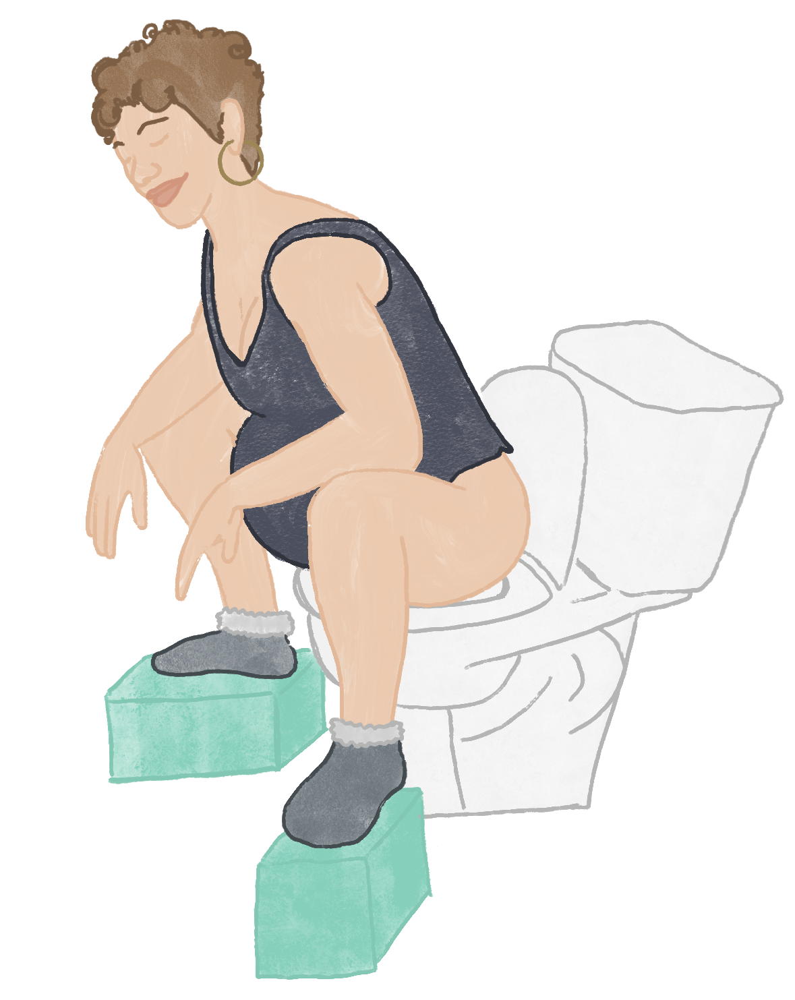
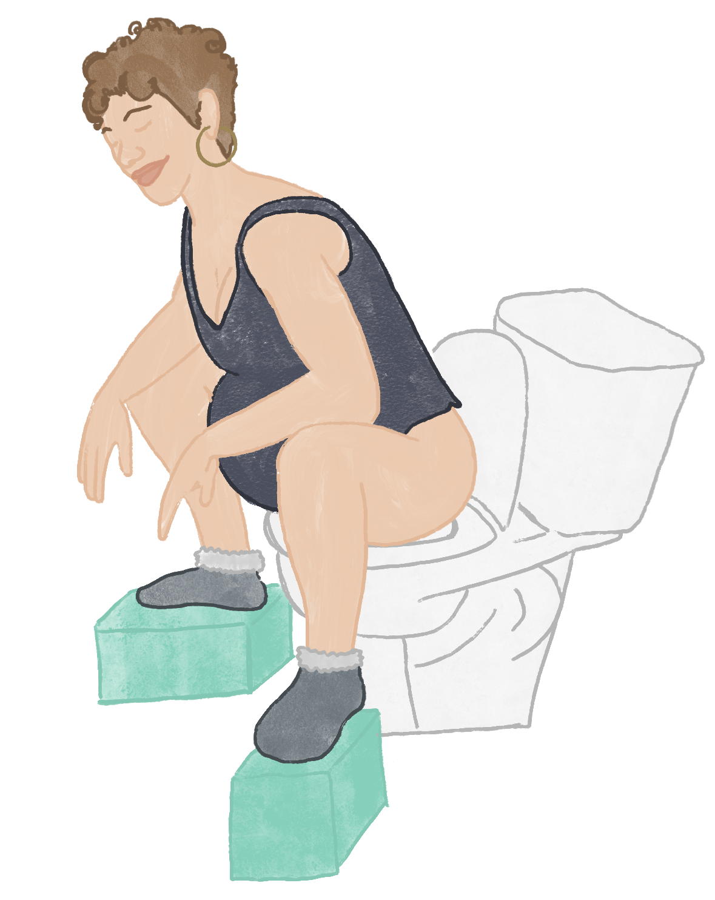
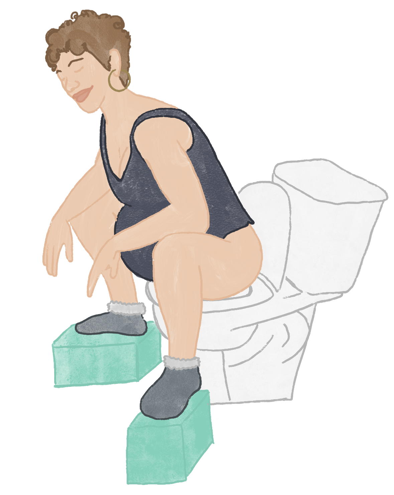
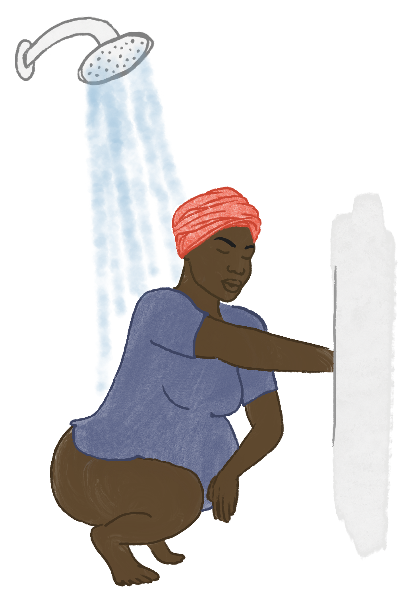
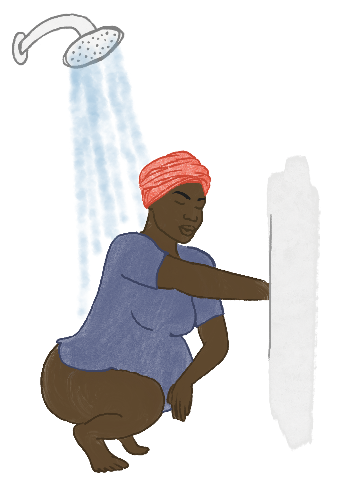
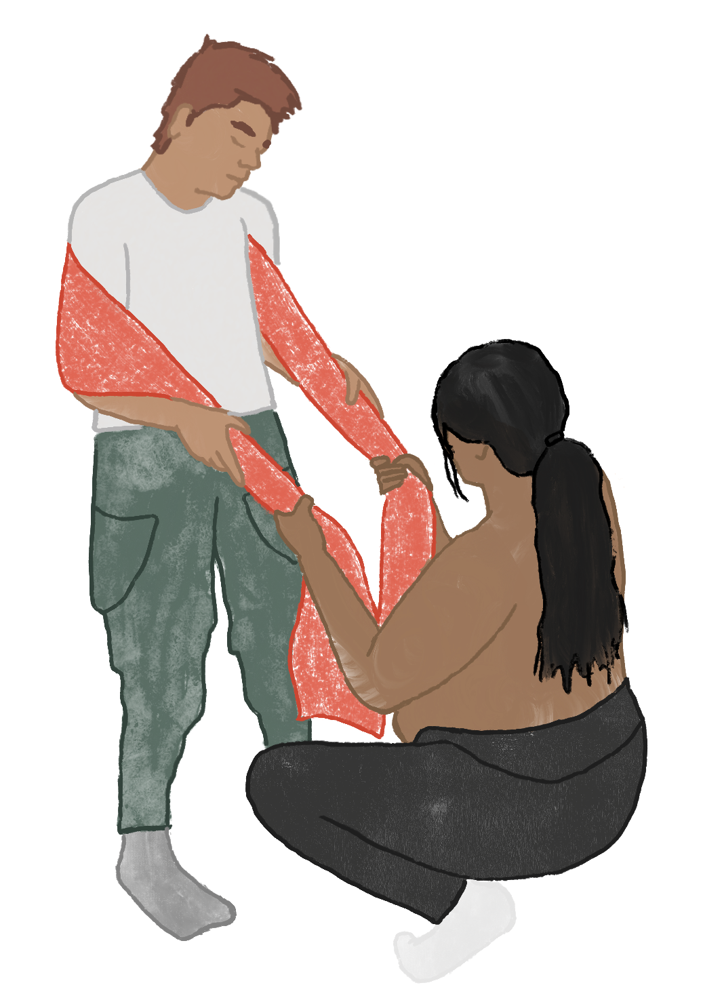
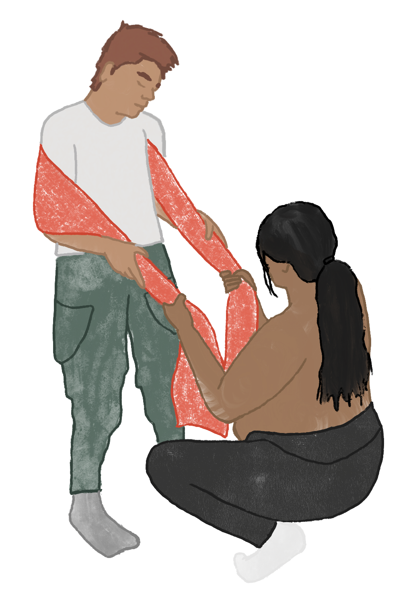

"However much we know about birth in general, we know nothing about a particular birth. We must let it unfold with its own uniqueness." - Elizabeth Noble
Historically giving birth in an upright position was the norm. However in recent years laying down or propped up in a semi-recumbent position has been adopted out of convenience for the attending physician. An increasing number of studies indicate this is not an optimal birthing position.
Freedom of movement is essential to achieve a normal physiologic birth.14 In fact, upright birthing positions are optimal for humans (and all mammals with this fetal head to pelvic outlet ratio).7 There are many benefits of frequent position changes during labor and a self-selected upright birthing position. These benefits include: 1,3,6,7,8,16,17,20
Upright birth positions are beneficial for breech presentation too. Research indicates upright vaginal breech deliveries result in shorter second stage labor, fewer maneuvers, fewer injuries to the birth person and baby, and fewer cesareans compared to the dorsal or lying down position.9,15
People who give birth in upright positions tend to report higher childbirth satisfaction and often report feeling powerful, protected, and self-confident.13,19 Upright birth positions are connected with the pregnant person playing an active role in the decision making process during labor and delivery and are often reported as their preferred birthing position.19
What are upright birthing positions? These positions include squatting, sitting, standing, kneeling, and quadraped (on hands and knees). There are many variations of all of these positions. What they all have in common is allowing for gravity assistance and for the bony joints of the pelvis to shift and move to allow for the baby’s descent.
When the pelvis is unrestricted, as in upright birthing positions, each joint of the pelvis moves in a
multiplanar direction.
At the pelvic inlet:
Lumbar extension (arching back), hip abduction (moving thigh away from midline), and hip external rotation (toes
pointed out) supports these pelvic movements to maximize the pelvic inlet space.11
At the pelvic outlet:
Lumbar flexion (curving back), hip adduction (moving thigh towards midline), hip internal rotation (toes pointed in) supports these pelvic movements to maximize the pelvic outlet space.11
There is likely not one specific optimal upright birthing position as each birth is unique in its own asymmetry. However there are some general defining characteristics of an optimal birth position:11

 

 

Squatting: This is great as it allows for both sacral and pelvic mobility. This allows for optimal shifting of the pelvic bones to maximize opening at the pelvic inlet and outlets. Gravity assists in this position which allows for more efficient uterine muscle contractions. Squatting does put the most pressure on the perineum. There is conflicting evidence on whether or not this increases the risk of perineal tearing.4,5,12 Squatting with support, however, allows for the pelvic floor muscles to relax more easily. It’s important that the low back is supported and not the sacrum so that the sacrum is still free to move. Research has shown squatting reduces back pain, supports fetal oxygenation, facilitates rotation of the baby through the birth canal.7 Squatting also shortens the second stage of labor and less pain overall is reported.10


Forward Leaning: This is great as it allows sacral mobility. It also allows for optimal shifting of the pelvic bones to maximize opening at the pelvic inlet and outlets. There is some assistance from gravity but not so much that it increases pressure on the perineum. The risk of perineal tearing in these positions are low. Research has shown forward leaning reduces back pain, encourages fetal head flexion, and encourages rotation of a baby in occiput posterior (back to back) position.7

|
Water: Water is also known for encouraging more changes in positions compared to being in bed resulting in more effective contractions.18 Giving birth in water decreases risk of perineal tearing by allowing for more gentle soft tissue yield.2 It also decreases the risk of postpartum hemorrhaging.2 |

Side-lying: This position does allow for sacral mobility. It can be an organizing and calming position for the birthing person, as well as, a good resting position if the birthing person is fatigued. It’s a gravity neutral position so it provides protection from perineal tearing. The downside is that only the top pelvis bone is free to shift and move as the baby descends. The bottom pelvis bone is fixed which can limit the amount of opening able to be achieved through the pelvic inlet and outlet. Due to this asymmetry, a long time spent in this position can increase the likelihood of pelvic dysfunction postpartum which can be corrected with pelvic floor physical therapy or chiropractic care.
| Semi-recumbent: It’s a gravity neutral position. Although due to the shape of the sacrum one could argue it's against gravity. Since the sacrum is fixed and can’t move in this position, the alignment of the sacrum causes the birthing person to push uphill to some degree and is more energy taxing for the birthing person. |
During your postpartum time: Tell your pelvic floor physical therapist the positions you were in during labor and birth. This will help them understand any concerns you have with mobility, back pain, pelvic pain, pain with intercourse, and bowel and bladder changes that may arise in the postpartum time.
Most importantly, listen to your body and your baby. Only you, the birthing person, will know the optimal position to be in throughout your labor and birth. You got this!
References:
Amanda Cleary Pickart PT, DPT